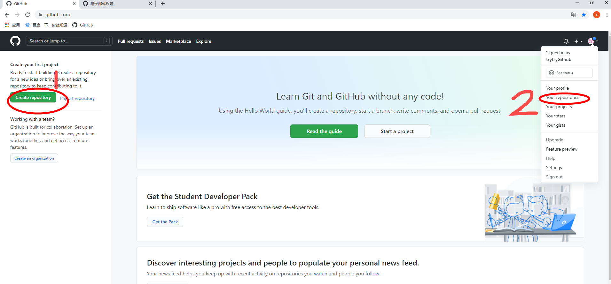
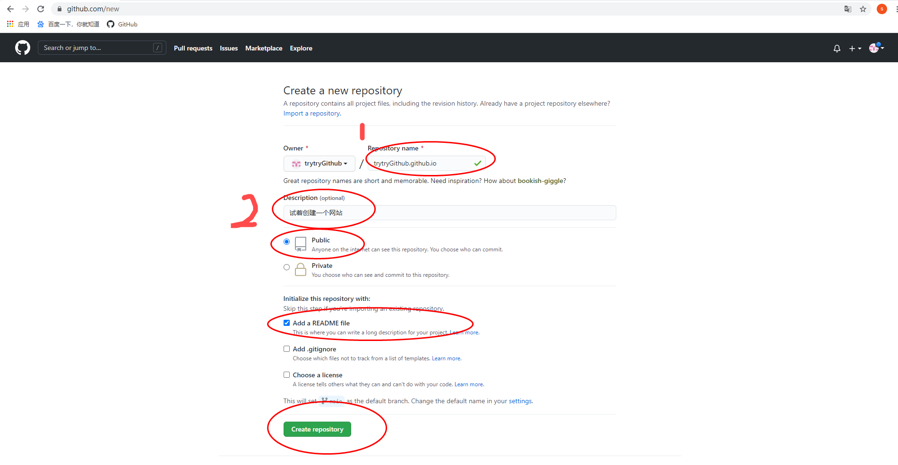
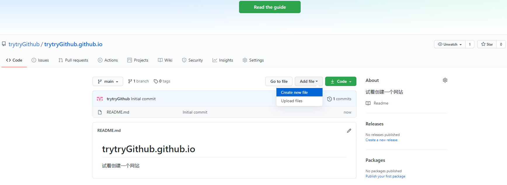
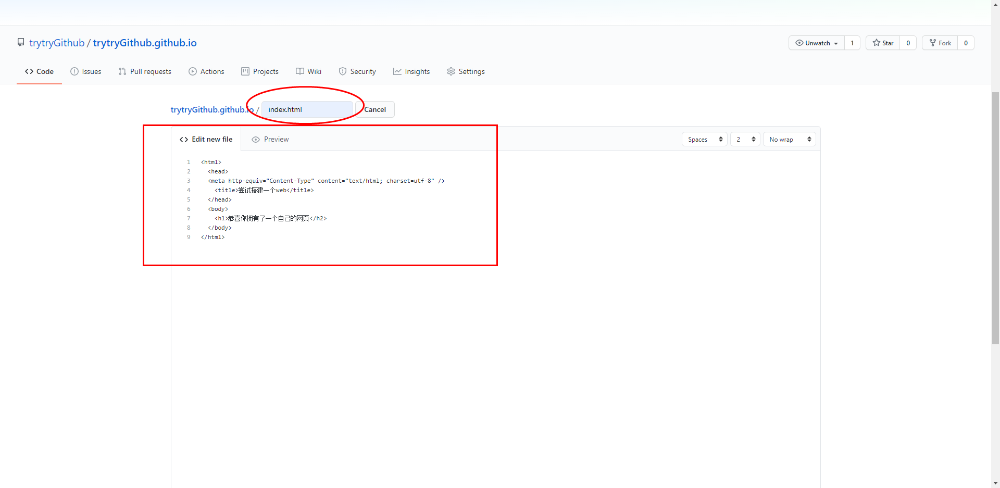
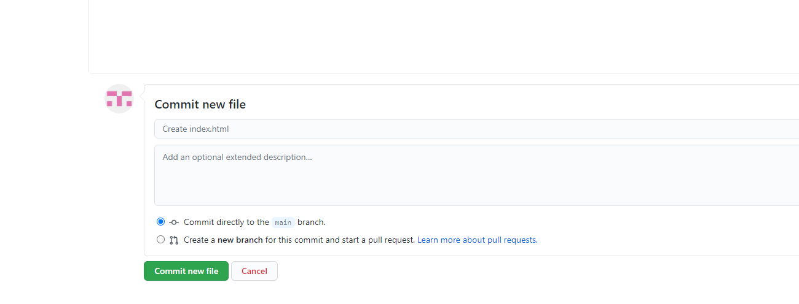
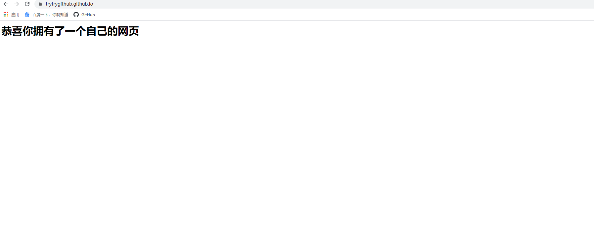

我开始搭建Mr.Symbolのblog要从租用阿里服务器开始说起，出于好奇吧，不过也因为学生买阿里云的轻量服务器价格相当优惠，9.5元/月！比一杯奶茶还便宜，毫不犹豫就下单了。拥有了服务器之后呢，我就想拿它来干点啥了，于是就开始了我的blog网站搭建之旅了。
诶，等一等，等一等，等一等，兄弟们先别冲。阿里云轻量服务器虽香，但还有更香的，那就是Github啦，零成本（G站威武啊）。
下面分享零基础用Github做一个可访问的网页吧
1. 注册一个Github账号，邮箱验证，登录。
- 国内可以访问Github，但速度特别慢。可以自己去探索下某种上网方式。
我还想在外面多待几年，所以我不知道怎么加速，别问我别问我~~
2.创建一个代码托管仓库
点标识1即可
标识2为以后你查看库的一种方式

3. 然后如下填写：
注意：标识1处填入格式为：
用户名.github.io
(我演示的这个Github用户名为trytryGithub。所以我填入trytryGithub.github.io)标识2处为你对这个库的描述，不填也没事。

4. 点击add file, 点击create new file

5. 如下输入:
a) index.html 为默认主页
b) 框中是一串html代码。（如果你不会，随便输入一串123456就可，待会你的页面上应该还是能显示123456的）

6. 然后拉到网页最下面，点击commit new file

7. 然后就完成了
在浏览器地址输入：
用户名.github.io
（例如我输入trytryGithub.github.io回车，就可以访问了）
我们的网站如下：

8. 有些时候网页出错了，那就把库中的READme.md文件删掉。
好了，那这个网站我们就算建造好了。如果你想让你的网站更美，那就去学点html、css等前端代码，加进这个库就好啦
有一说一，Github这个功能实在太强大了，既不用买服务器域名，也不用自己去调配服务器环境，就能有自己的网站。给Github点赞！